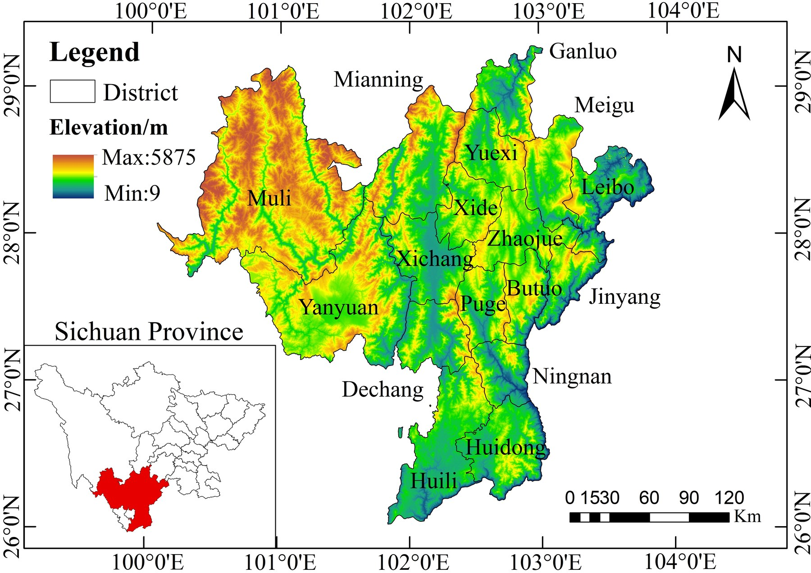
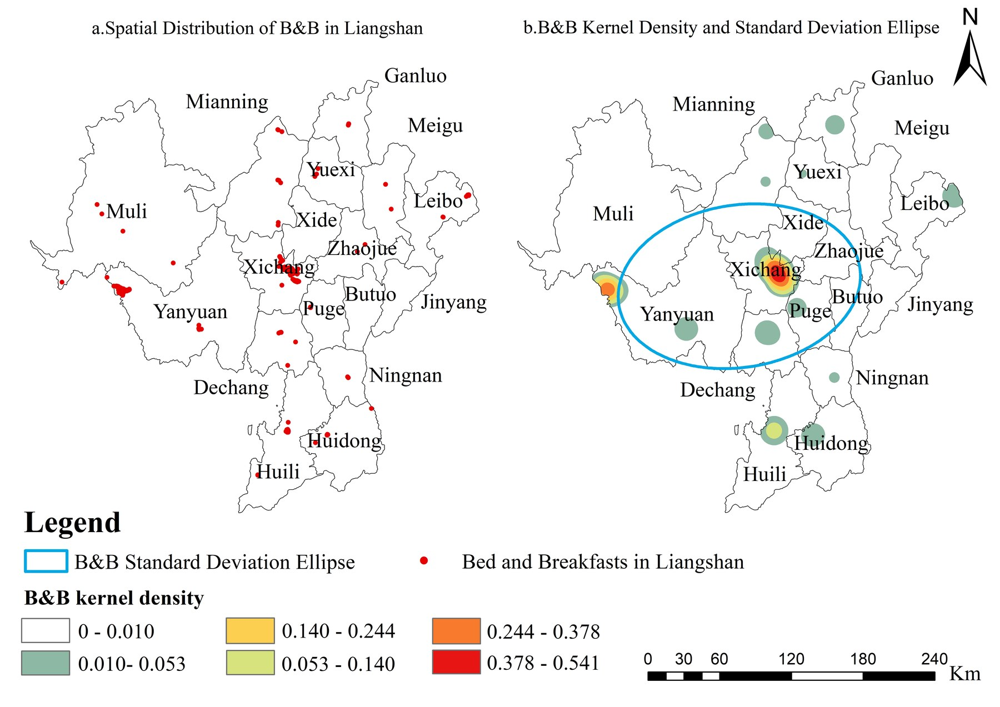
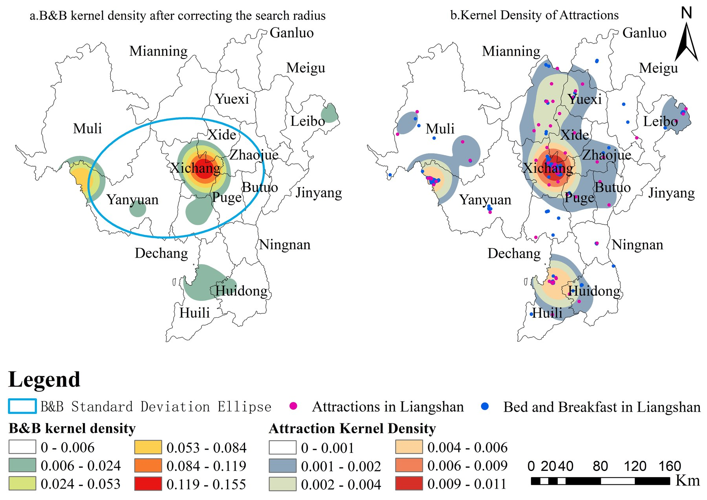
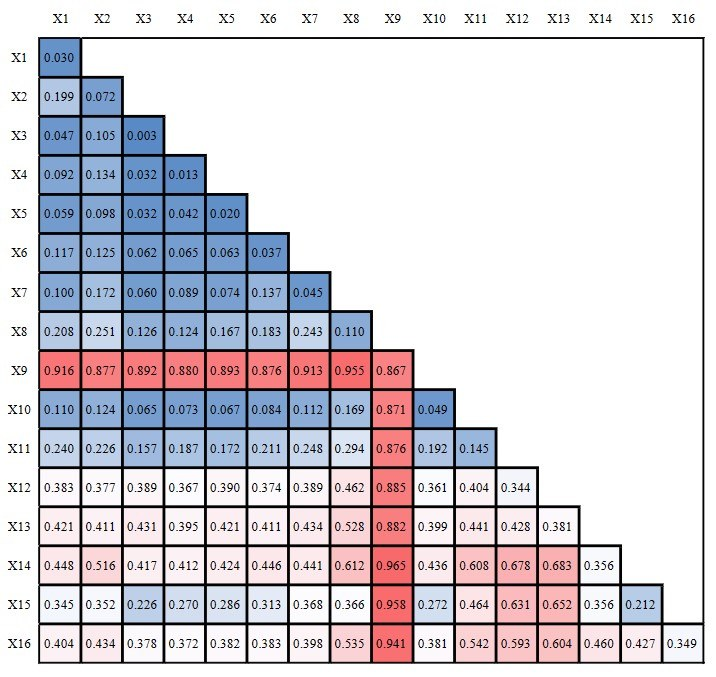
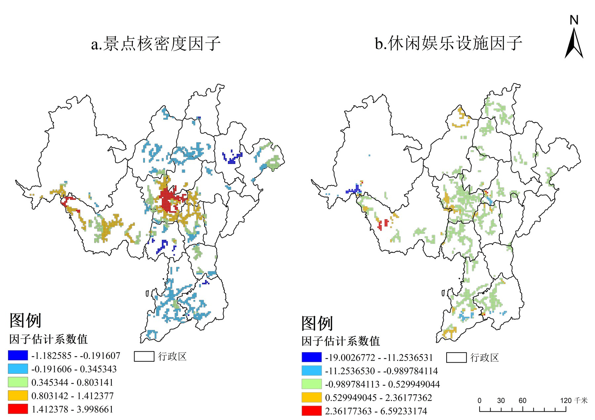
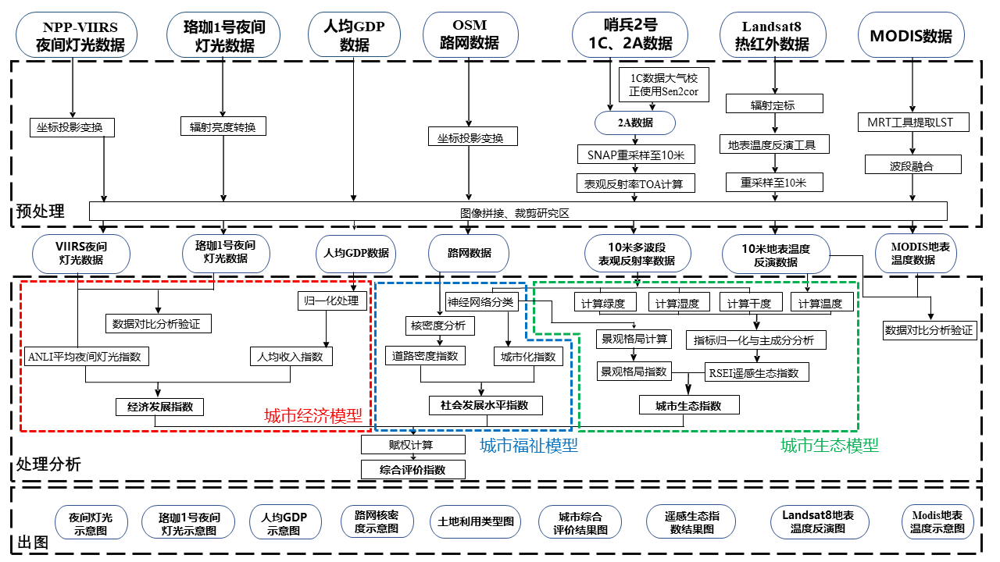
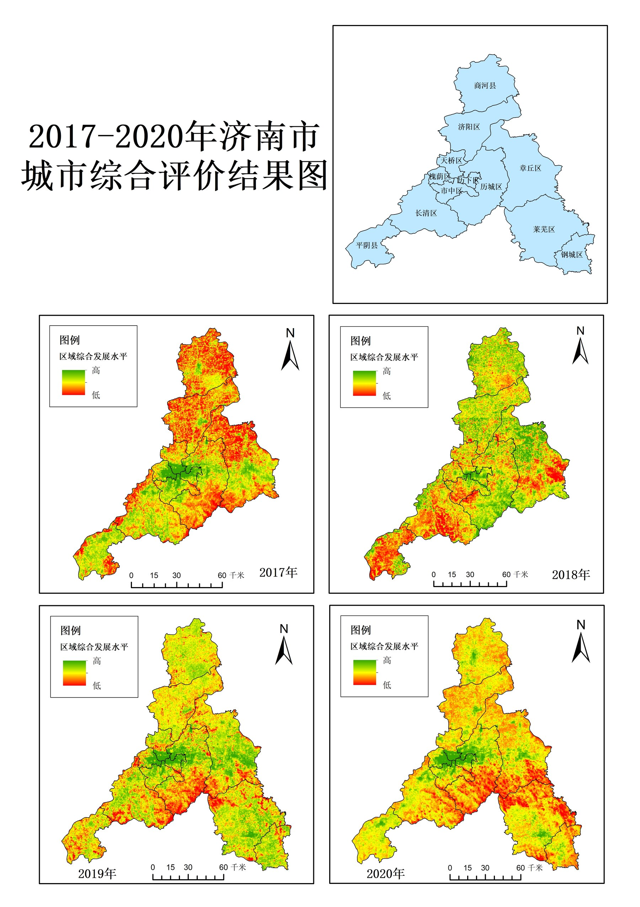
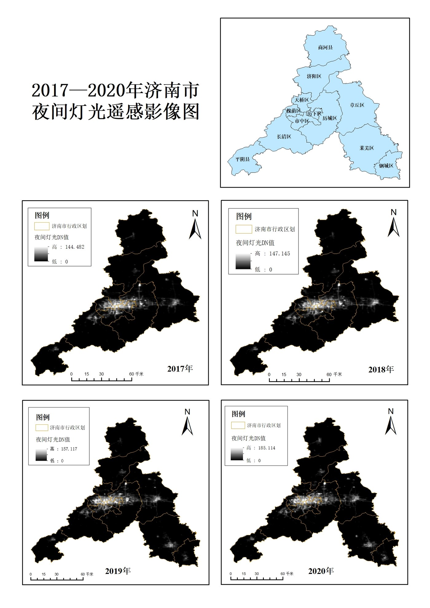
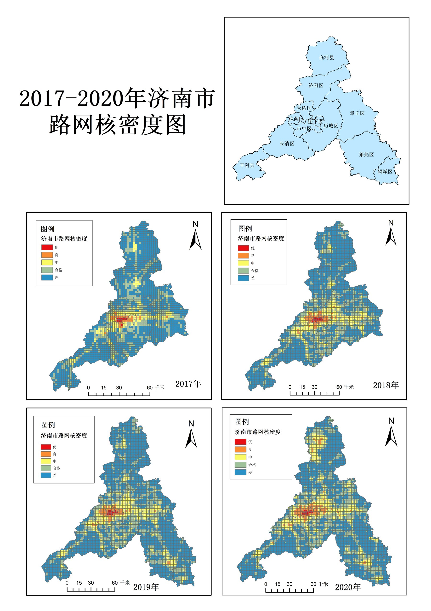
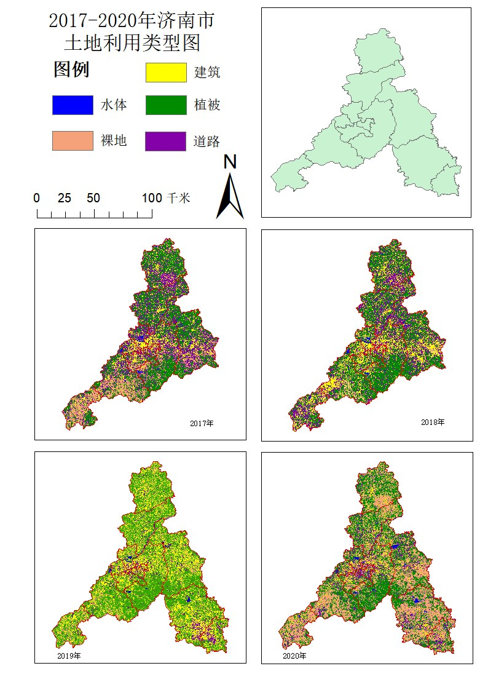

Additional GIS & Spatial Analysis
This section presents my earlier GIScience and spatial analysis projects, highlighting my experience with multi-source geospatial data, spatial statistics, spatial econometric models, and urban/regional analysis.
Multiscale Spatial Patterns and Driving Mechanisms of Homestay Development in Liangshan Prefecture
Keywords: GIS; Spatial Analysis; Homestays; B&Bs; Liangshan Prefecture; POI; OSM; NPP-VIIRS; Kernel Density; Average Nearest Neighbor; Standard Deviational Ellipse; Geographical Detector; GWR; Spatial Econometrics; Tourism Geography
Project trajectory: This work began as my undergraduate thesis, received undergraduate thesis recognition, was later extended into a first-author SPIE conference paper, and also supported my B1972 GIS competition submission.
Overview
This project investigates the spatial distribution and driving mechanisms of homestays / B&Bs in Liangshan Prefecture, Sichuan, China. It was initially completed as my undergraduate thesis and later developed into a first-author SPIE conference paper. The study integrates multi-source geospatial data, including POI records, remote sensing imagery, road network data, and statistical data, to characterize homestay concentration and spatial heterogeneity. Methodologically, it combines GIS spatial analysis, Average Nearest Neighbor, kernel density analysis, Standard Deviational Ellipse, Geographical Detector, and Geographically Weighted Regression (GWR). By connecting global-scale factor detection with local-scale regression modeling, the project demonstrates my foundation in GIScience, spatial statistics, spatial econometrics, and multi-source geospatial data analysis for regional tourism geography.
Research Objective
- Characterize the spatial distribution pattern of homestays in Liangshan Prefecture.
- Identify clustering direction and spatial concentration characteristics using GIS-based spatial statistics.
- Quantify global driving factors of homestay distribution using Geographical Detector.
- Explore spatially heterogeneous local relationships using GWR.
- Provide a spatial analytical basis for tourism resource planning and regional development evaluation.
Study Area
The study area is Liangshan Yi Autonomous Prefecture in southwestern Sichuan Province, China, located between 26 degrees 03'--29 degrees 18' N and 100 degrees 03'--103 degrees 52' E. The prefecture covers approximately 60,400 km2 and includes 15 counties and 2 county-level cities. Its terrain is dominated by mountains and plateaus, and its tourism resources include Qionghai-Lushan, Luoji Mountain, Lugu Lake, and other major natural and cultural attractions.
Data
- Homestay / B&B POI data: 369 records collected for Liangshan Prefecture.
- Tourism and service POI data, including attractions, catering, shopping, and leisure service facilities.
- OSM road network data, including major road classes used for accessibility analysis.
- Remote sensing imagery and nighttime light data used as part of the multi-source geospatial data framework.
- Statistical and socioeconomic data used for factor analysis and spatial modeling.
Methods
- Average Nearest Neighbor Index
- Kernel density analysis and modified kernel density analysis
- Standard Deviational Ellipse
- Geographical Detector
- Geographically Weighted Regression, GWR
- Buffer analysis for transportation arteries and tourism attractions
- GIS spatial visualization and mapping
- Global and local scale factor analysis
Key Results
- The spatial distribution of homestays showed a significant clustering pattern, with an Average Nearest Neighbor Index of 0.141986 and a Z-score of -31.573762.
- Standard Deviational Ellipse analysis indicated a NE-SW distribution direction, with a rotation angle of 81.156 degrees.
- Kernel density analysis showed a "one main center, one subcenter, and multiple points" pattern: Xichang served as the main center, while Yanyuan / Lugu Lake formed a subcenter.
- Geographical Detector analysis quantified driving factors at global and grid scales, showing that attractions, regional development, and population-related factors helped explain homestay distribution.
- GWR-based local analysis showed spatial heterogeneity in the influence of key factors. The CA-GWR model achieved an adjusted R2 of 0.833 and an AICc of 3451.861.
My Contribution
- Conceptualized the research topic and developed the overall analytical framework for my undergraduate thesis.
- Collected and processed multi-source geospatial datasets, including POI, OSM road network, remote sensing, nighttime light, and statistical data.
- Independently implemented the spatial analysis and modeling workflow, including spatial pattern analysis, Geographical Detector analysis, and GWR-based local factor analysis.
- Produced maps, statistical summaries, and result interpretations for the thesis and subsequent conference paper.
- Led the writing, revision, and polishing of the undergraduate thesis and manuscript, with constructive feedback from my supervisor.
Outputs and Recognition
- Role: Independent undergraduate thesis project; first author of the subsequent SPIE conference paper.
- Undergraduate thesis project, later developed into a first-author SPIE conference paper.
- Outstanding Undergraduate Thesis Award.
- Competition project: B1972, Spatial Distribution and Influencing Factors of Homestays in Liangshan Prefecture Based on Geographical Detector and Geographically Weighted Regression.
- Third Prize, Geographic Design Group, 2023 Esri-Cup Chinese College Students GIS Software Development Contest, Chinese Society for Geodesy, Photogrammetry and Cartography.
- First-author paper: Youbin He; Yanzhen Yang. Research on the spatial distribution and influencing factors of B&Bs in Liangshan prefecture based on GIS spatial analysis and spatial econometric model. ICMIC 2024, SPIE, Vol. 13447, pp. 1300-1320, 2025.
- DOI: 10.1117/12.3049158.
- Publisher link: SPIE Digital Library.
- Public PDF: Not listed because no legally shareable version has been confirmed.
Selected Figures





Integrated Assessment of Urban Development Quality in Jinan City Using Multi-source Geospatial Data
Keywords: Urban Development Quality; Multi-source Geospatial Data; GIS; AHP; Composite Assessment; Spatial Analysis; Jinan City; Remote Sensing Applications; Urban Planning Support
Overview
This project evaluated urban development quality in Jinan City, Shandong Province, China, using multi-source geospatial data. Originally developed as the GIS competition work D367: Comprehensive Urban Analysis of Jinan City Based on Multi-source Data, the project integrated remote sensing imagery, nighttime light data, road network data, land-use information, and socioeconomic statistics into an AHP-based composite assessment framework. The assessment considered economic vitality, ecological quality, and urban welfare / social development dimensions, classified urban development levels into three tiers, and produced spatial evaluation maps for 2017–2020. As an early team-based GIS and remote sensing application project, it demonstrates my experience in project leadership, urban spatial evaluation, multi-source data integration, and GIS-based analytical communication.
Research Objective
- Develop a multi-source geospatial framework for evaluating urban development quality in Jinan City.
- Construct an assessment structure integrating economic, ecological, and social-welfare dimensions.
- Apply AHP and composite assessment thinking to support urban development evaluation.
- Classify urban development levels into three tiers for spatial comparison.
- Provide GIS-based spatial evidence for urban planning and policy-oriented analysis.
Study Area
The study area is Jinan City, Shandong Province, China. The project focuses on district-level urban development quality and uses multi-year geospatial and socioeconomic data from 2017 to 2020 to evaluate changes in urban economy, ecological environment, and social-welfare conditions.
Data
- Landsat 8 imagery for land surface temperature and ecological assessment inputs.
- Sentinel-2 imagery used with Landsat 8 to support RSEI construction.
- MODIS land surface temperature products.
- NPP-VIIRS and Luojia-1 nighttime light data.
- OSM road network data.
- Per-capita GDP data from Jinan statistical yearbook materials.
- Land-use classification data for 2017–2020.
Indicator System
The project constructed an AHP-based urban development assessment framework organized around three dimensions: urban economy, urban ecology, and urban welfare / social development. The indicator system incorporated multi-source geospatial variables related to nighttime light intensity, economic development, ecological condition, road-network accessibility, and urbanization / land-use characteristics. These indicators were integrated to support a spatially explicit assessment of urban development quality across Jinan City.
Representative indicators included:
- ANLI nighttime light index
- GDPP per-capita GDP index
- Remote Sensing Ecological Index, RSEI
- Road-network kernel density
- Urbanization / land-use related indicators
Methods
- Multi-source geospatial data preprocessing and spatial alignment.
- Remote sensing index construction and ecological assessment using RSEI.
- Nighttime-light-based economic proxy analysis.
- Road-network kernel density analysis.
- AHP-based weighting and composite assessment modeling.
- GIS raster calculation, zonal statistics, and spatial visualization.
- Three-tier classification of urban development quality.
Key Results
- Developed an AHP-based composite assessment framework integrating economic, ecological, and social-welfare dimensions.
- Produced GIS-based urban development quality maps for Jinan City from 2017–2020.
- Classified urban development quality into three tiers for spatial comparison and interpretation.
- Integrated remote sensing products and non-remote-sensing geospatial datasets into a unified spatial evaluation workflow.
My Contribution
- Role: Project Leader.
- Coordinated the overall workflow from research design to final competition submission.
- Conceptualized the project topic and developed the analytical framework for assessing urban development quality in Jinan City.
- Organized data collection and preprocessing using multi-source geospatial datasets.
- Led the construction of the indicator system and the AHP-based composite assessment model.
- Implemented GIS-based spatial analysis, mapping, and visualization of urban development levels.
- Interpreted the results and led the writing, revision, and refinement of the project report and competition materials.
- Coordinated team collaboration and ensured completion of the project deliverables.
Outputs and Recognition
- GIS competition project: D367, Comprehensive Urban Analysis of Jinan City Based on Multi-source Data.
- Third Prize, Remote Sensing Application Group, 2022 Esri-Cup Chinese College Students GIS Software Development Contest, Chinese Society for Geodesy, Photogrammetry and Cartography.
- First Prize, 2nd Remote Sensing Technology Competition, Shandong Jiaotong University.
Selected Figures




